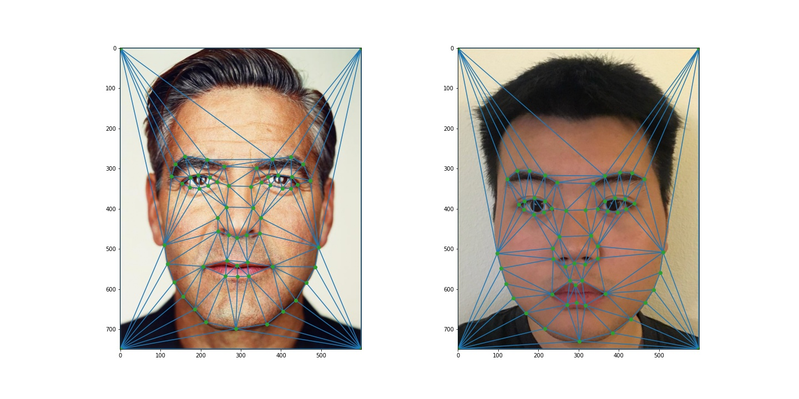
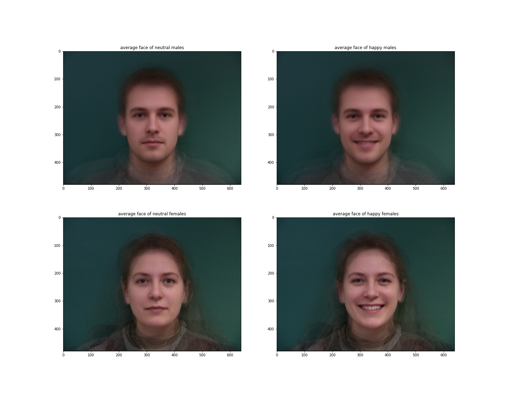
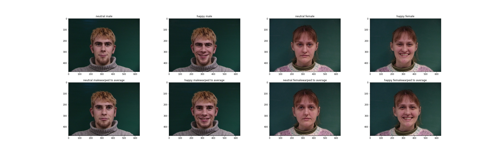
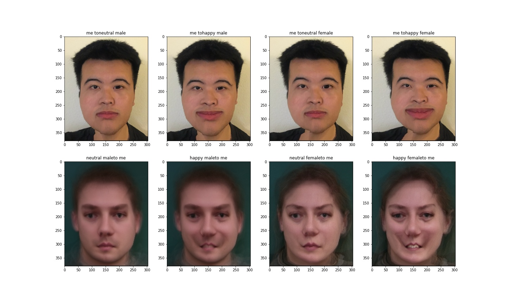
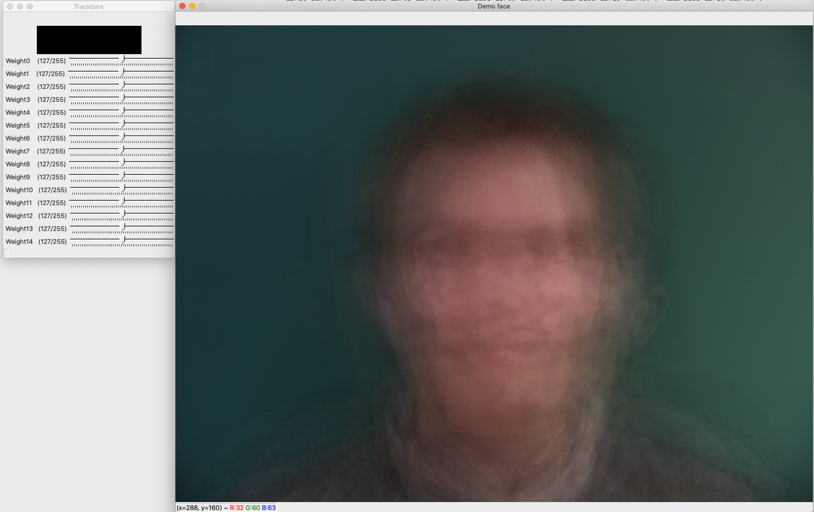

The Morph Sequence

58 points are marked on both images:

Average faces:
Faces morphed into the average shapes:
My face warped into the average faces:

I used PCA to find the eigenbasis for the faces. Run the last cell in my code to create the slidebars for each feature and drag them to see the effect on the average face
